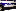

<!doctype html>
<html lang="en">
    <head>
        <meta charset="utf-8">
        <meta http-equiv="X-UA-Compatible" content="IE=edge">
        <meta name="viewport" content="initial-scale=1,user-scalable=no,maximum-scale=1,width=device-width">
        <meta name="mobile-web-app-capable" content="yes">
        <meta name="apple-mobile-web-app-capable" content="yes">
        <link rel="stylesheet" href="css/leaflet.css"><link rel="stylesheet" href="css/L.Control.Locate.min.css">
        <link rel="stylesheet" href="css/qgis2web.css"><link rel="stylesheet" href="css/fontawesome-all.min.css">
        <link rel="stylesheet" href="css/leaflet-control-geocoder.Geocoder.css">
        <link rel="stylesheet" href="css/leaflet-measure.css">
        <style>
        html, body, #map {
            width: 100%;
            height: 100%;
            padding: 0;
            margin: 0;
        }
        </style>
        <title></title>
    </head>
    <body>
        <div id="map">
        </div>
        <script src="js/qgis2web_expressions.js"></script>
        <script src="js/leaflet.js"></script><script src="js/L.Control.Locate.min.js"></script>
        <script src="js/leaflet.rotatedMarker.js"></script>
        <script src="js/leaflet.pattern.js"></script>
        <script src="js/leaflet-hash.js"></script>
        <script src="js/Autolinker.min.js"></script>
        <script src="js/rbush.min.js"></script>
        <script src="js/labelgun.min.js"></script>
        <script src="js/labels.js"></script>
        <script src="js/leaflet-control-geocoder.Geocoder.js"></script>
        <script src="js/leaflet-measure.js"></script>
        <script src="data/Lugarderiesgoporlluvia_3.js"></script>
        <script>
        var highlightLayer;
        function highlightFeature(e) {
            highlightLayer = e.target;

            if (e.target.feature.geometry.type === 'LineString') {
              highlightLayer.setStyle({
                color: '#ffff00',
              });
            } else {
              highlightLayer.setStyle({
                fillColor: '#ffff00',
                fillOpacity: 1
              });
            }
            highlightLayer.openPopup();
        }
        var map = L.map('map', {
            zoomControl:true, maxZoom:28, minZoom:1
        }).fitBounds([[29.00440317962092,-111.10809550572296],[29.168739726004443,-110.8684644942772]]);
        var hash = new L.Hash(map);
        map.attributionControl.setPrefix('<a href="https://github.com/tomchadwin/qgis2web" target="_blank">qgis2web</a> &middot; <a href="https://leafletjs.com" title="A JS library for interactive maps">Leaflet</a> &middot; <a href="https://qgis.org">QGIS</a>');
        var autolinker = new Autolinker({truncate: {length: 30, location: 'smart'}});
        L.control.locate({locateOptions: {maxZoom: 19}}).addTo(map);
        var measureControl = new L.Control.Measure({
            position: 'topleft',
            primaryLengthUnit: 'meters',
            secondaryLengthUnit: 'kilometers',
            primaryAreaUnit: 'sqmeters',
            secondaryAreaUnit: 'hectares'
        });
        measureControl.addTo(map);
        document.getElementsByClassName('leaflet-control-measure-toggle')[0]
        .innerHTML = '';
        document.getElementsByClassName('leaflet-control-measure-toggle')[0]
        .className += ' fas fa-ruler';
        var bounds_group = new L.featureGroup([]);
        function setBounds() {
        }
        map.createPane('pane_OpenStreetMap_0');
        map.getPane('pane_OpenStreetMap_0').style.zIndex = 400;
        var layer_OpenStreetMap_0 = L.tileLayer('https://tile.openstreetmap.org/{z}/{x}/{y}.png', {
            pane: 'pane_OpenStreetMap_0',
            opacity: 1.0,
            attribution: '',
            minZoom: 1,
            maxZoom: 28,
            minNativeZoom: 0,
            maxNativeZoom: 19
        });
        layer_OpenStreetMap_0;
        map.addLayer(layer_OpenStreetMap_0);
        map.createPane('pane_Hibridogooglemaps_1');
        map.getPane('pane_Hibridogooglemaps_1').style.zIndex = 401;
        var layer_Hibridogooglemaps_1 = L.tileLayer('http://mt0.google.com/vt/lyrs=y&hl=en&x={x}&y={y}&z={z}', {
            pane: 'pane_Hibridogooglemaps_1',
            opacity: 1.0,
            attribution: '',
            minZoom: 1,
            maxZoom: 28,
            minNativeZoom: 0,
            maxNativeZoom: 18
        });
        layer_Hibridogooglemaps_1;
        map.addLayer(layer_Hibridogooglemaps_1);
        map.createPane('pane_GoogleMaps_2');
        map.getPane('pane_GoogleMaps_2').style.zIndex = 402;
        var layer_GoogleMaps_2 = L.tileLayer('http://mt0.google.com/vt/lyrs=p&hl=en&x={x}&y={y}&z={z}', {
            pane: 'pane_GoogleMaps_2',
            opacity: 1.0,
            attribution: '',
            minZoom: 1,
            maxZoom: 28,
            minNativeZoom: 0,
            maxNativeZoom: 18
        });
        layer_GoogleMaps_2;
        map.addLayer(layer_GoogleMaps_2);
        function pop_Lugarderiesgoporlluvia_3(feature, layer) {
            layer.on({
                mouseout: function(e) {
                    for (i in e.target._eventParents) {
                        e.target._eventParents[i].resetStyle(e.target);
                    }
                    if (typeof layer.closePopup == 'function') {
                        layer.closePopup();
                    } else {
                        layer.eachLayer(function(feature){
                            feature.closePopup()
                        });
                    }
                },
                mouseover: highlightFeature,
            });
            var popupContent = '<table>\
                    <tr>\
                        <th scope="row">ZONA</th>\
                        <td>' + (feature.properties['ZONA'] !== null ? autolinker.link(feature.properties['ZONA'].toLocaleString()) : '') + '</td>\
                    </tr>\
                    <tr>\
                        <td colspan="2">' + (feature.properties['DIRECCION'] !== null ? autolinker.link(feature.properties['DIRECCION'].toLocaleString()) : '') + '</td>\
                    </tr>\
                    <tr>\
                        <td colspan="2">' + (feature.properties['X'] !== null ? autolinker.link(feature.properties['X'].toLocaleString()) : '') + '</td>\
                    </tr>\
                    <tr>\
                        <td colspan="2">' + (feature.properties['Y'] !== null ? autolinker.link(feature.properties['Y'].toLocaleString()) : '') + '</td>\
                    </tr>\
                    <tr>\
                        <th scope="row">MOTIVO DE CIERRE</th>\
                        <td>' + (feature.properties['MOTIVO DE CIERRE'] !== null ? autolinker.link(feature.properties['MOTIVO DE CIERRE'].toLocaleString()) : '') + '</td>\
                    </tr>\
                </table>';
            layer.bindPopup(popupContent, {maxHeight: 400});
        }

        function style_Lugarderiesgoporlluvia_3_0() {
            return {
                pane: 'pane_Lugarderiesgoporlluvia_3',
        rotationAngle: 0.0,
        rotationOrigin: 'center center',
        icon: L.icon({
            iconUrl: 'markers/pat elec.svg',
            iconSize: [30.4, 30.4]
        }),
                interactive: true,
            }
        }
        map.createPane('pane_Lugarderiesgoporlluvia_3');
        map.getPane('pane_Lugarderiesgoporlluvia_3').style.zIndex = 403;
        map.getPane('pane_Lugarderiesgoporlluvia_3').style['mix-blend-mode'] = 'normal';
        var layer_Lugarderiesgoporlluvia_3 = new L.geoJson(json_Lugarderiesgoporlluvia_3, {
            attribution: '',
            interactive: true,
            dataVar: 'json_Lugarderiesgoporlluvia_3',
            layerName: 'layer_Lugarderiesgoporlluvia_3',
            pane: 'pane_Lugarderiesgoporlluvia_3',
            onEachFeature: pop_Lugarderiesgoporlluvia_3,
            pointToLayer: function (feature, latlng) {
                var context = {
                    feature: feature,
                    variables: {}
                };
                return L.marker(latlng, style_Lugarderiesgoporlluvia_3_0(feature));
            },
        });
        bounds_group.addLayer(layer_Lugarderiesgoporlluvia_3);
        map.addLayer(layer_Lugarderiesgoporlluvia_3);
        var osmGeocoder = new L.Control.Geocoder({
            collapsed: true,
            position: 'topleft',
            text: 'Search',
            title: 'Testing'
        }).addTo(map);
        document.getElementsByClassName('leaflet-control-geocoder-icon')[0]
        .className += ' fa fa-search';
        document.getElementsByClassName('leaflet-control-geocoder-icon')[0]
        .title += 'Search for a place';
        var baseMaps = {};
        L.control.layers(baseMaps,{' Lugar de riesgo por lluvia': layer_Lugarderiesgoporlluvia_3,"Google Maps": layer_GoogleMaps_2,"Hibrido google maps": layer_Hibridogooglemaps_1,"OpenStreetMap": layer_OpenStreetMap_0,},{collapsed:false}).addTo(map);
        setBounds();
        </script>
    </body>
</html>
